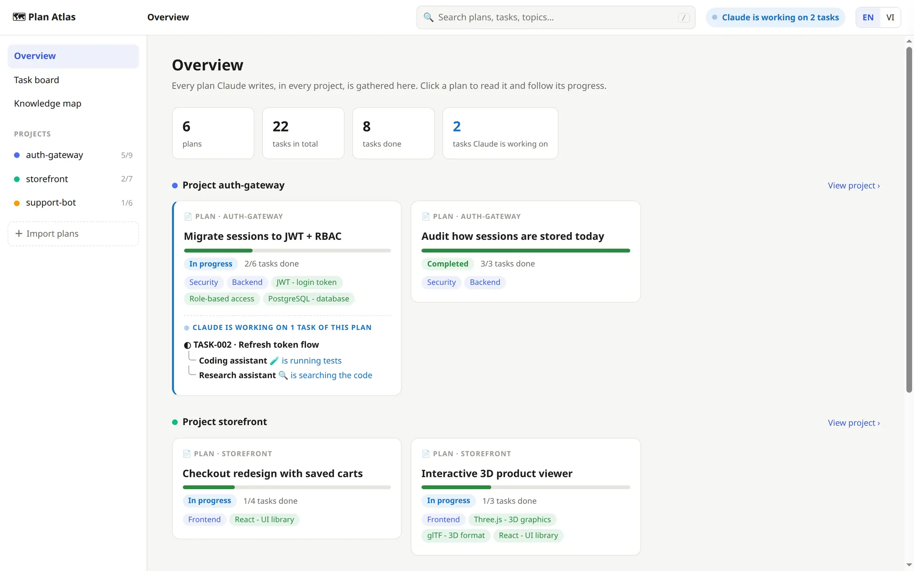
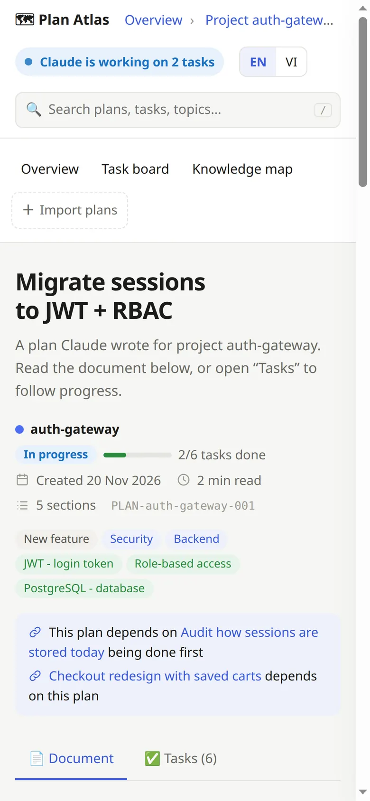
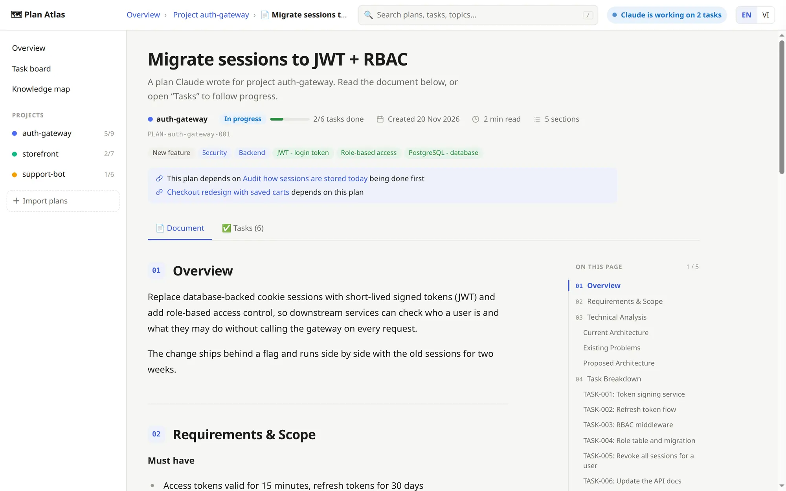
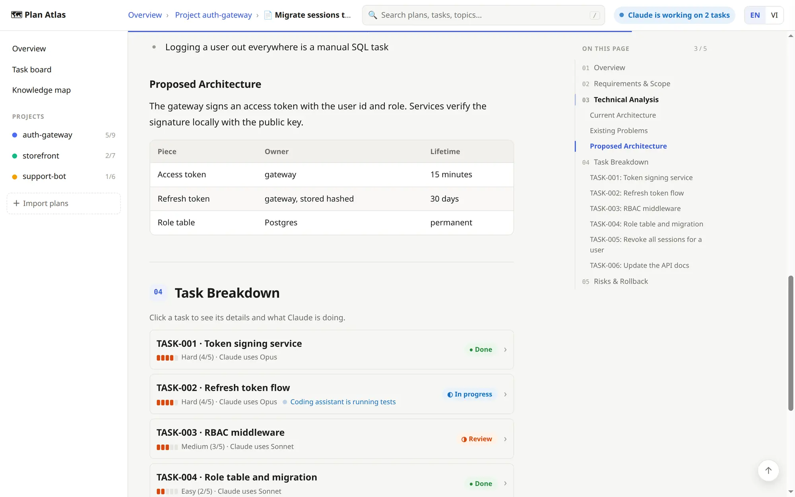
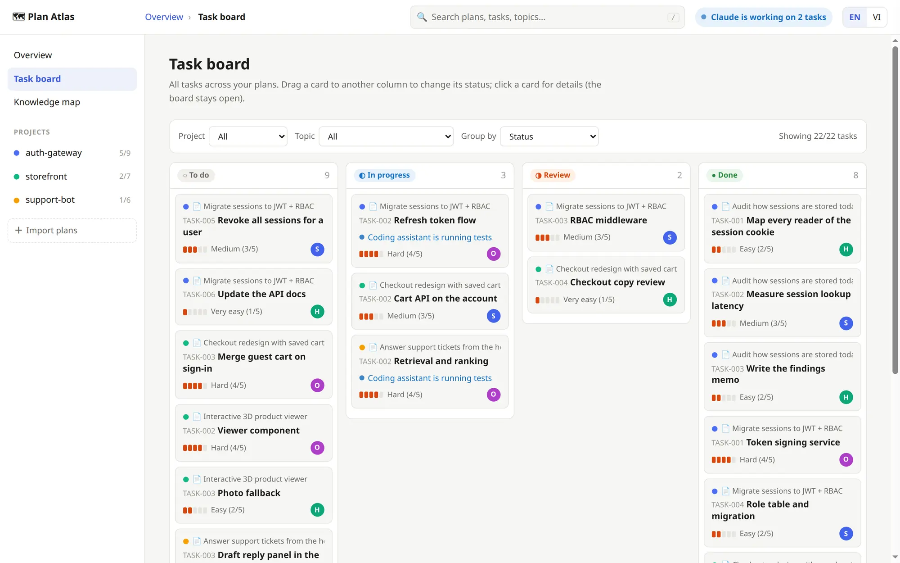
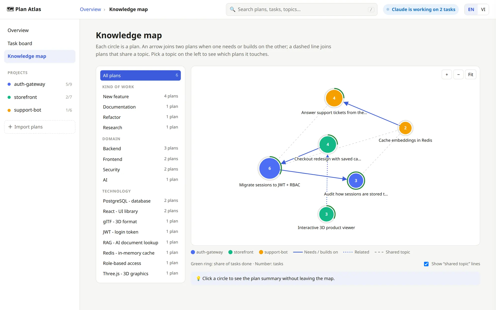
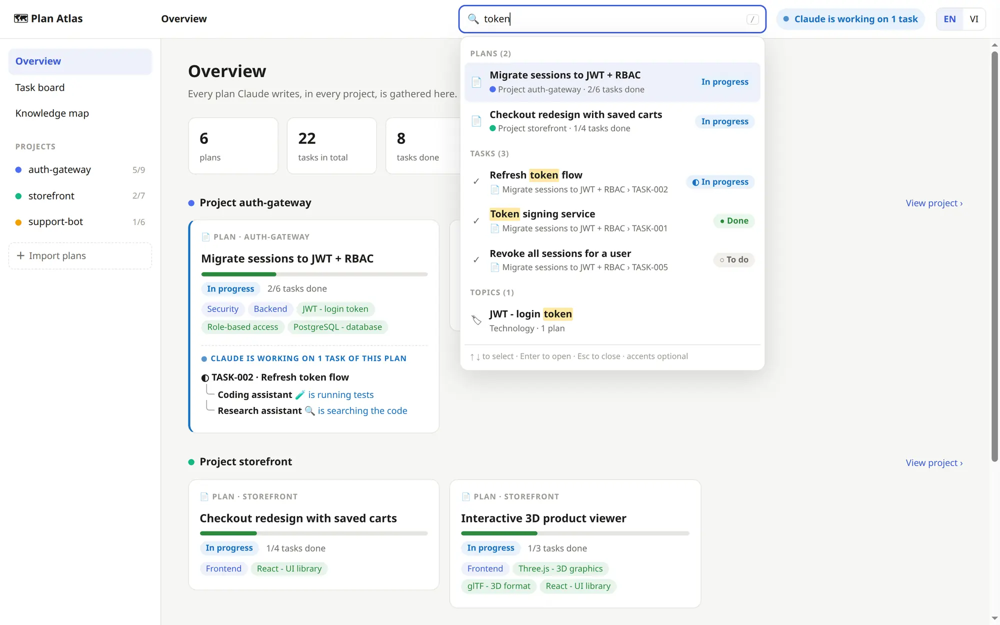
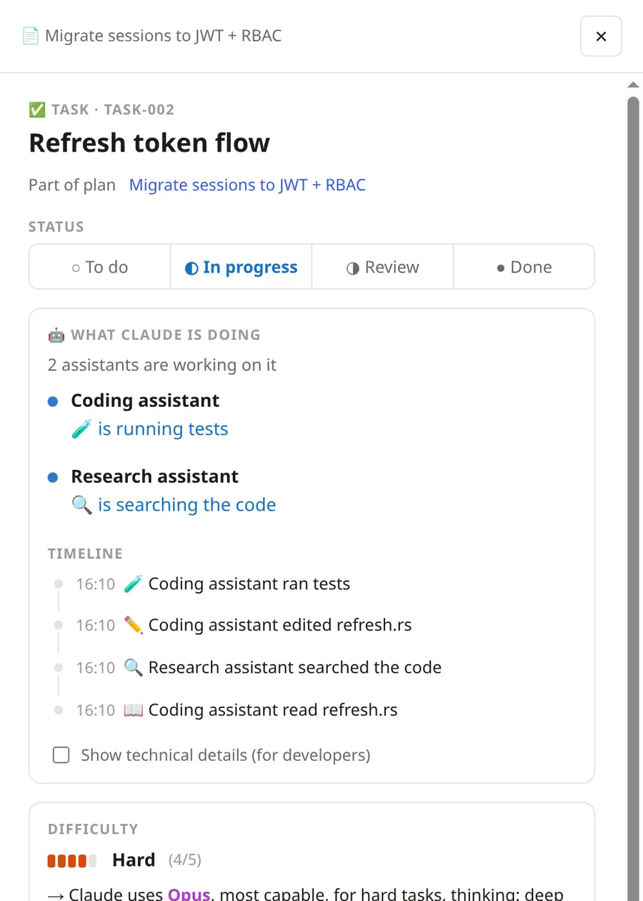
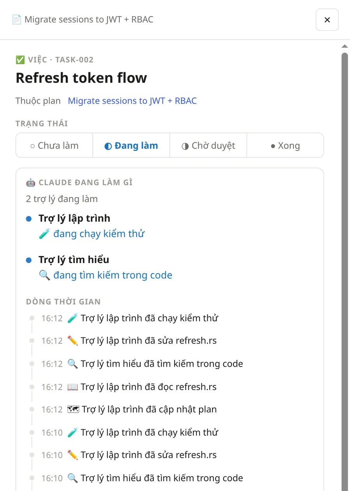

Every plan Claude writes, in one place.
Read plans as documents, track their tasks, and watch Claude work, live.
Free and open source (MIT). Runs on your own machine: macOS, Linux and Windows.

All your projects on one screen
Plans from every repository, grouped by project, with live progress on every card.
- Finds what exists
- Plans in
~/.claude/plansarrive on first launch. - Takes the rest
- Import any Markdown file or folder.
- Leaves sources alone
- Source files are never modified.

Screens on this page show sample plans, not real projects.

A plan reads like a document
Five fixed sections, overview to rollback, with an outline that follows you.

Each task says how hard it is
Complexity from 1 to 5 sets the model, Haiku, Sonnet or Opus, and the effort.

Drag a card to change its status
One board for the tasks of every plan: to do, in progress, review, done.

See which plans depend on which
Topics come from one shared taxonomy, and a graph links plans that build on each other.

Search that ignores accents
Plans, tasks and topics in one box. Typing “bao mat” finds “bảo mật”.
Readable by the whole team
What Claude and its subagents do becomes plain sentences, filed under the plan and task.
| Claude ran | Your team reads |
|---|---|
Read refresh.rs | Coding assistant read refresh.rs |
Grep refresh_token | Research assistant searched the code |
Edit refresh.rs | Coding assistant edited refresh.rs |
cargo test refresh | Coding assistant ran tests |
Developers can still open the raw tool calls with one click.


One command connects Claude Code
plan-atlas setup
| It adds | So that | Where |
|---|---|---|
| A Skill | Claude knows where and how to write plans | ~/.claude/skills/plan-atlas/SKILL.md |
| Hooks | Plan Atlas sees what Claude and each subagent is doing | ~/.claude/settings.json (backed up first) |
| An MCP server | Claude creates plans, links related ones and updates tasks | claude mcp add … plan-atlas mcp |
plan-atlas uninstall-claude removes all three and leaves your other settings untouched.
Your plans never leave your machine
- ~9 MBOne binary: server, MCP, hooks and interface
- ~16 MBMemory at idle with 1,000 plans indexed
- 127.0.0.1The only address it listens on
- No telemetry and no outbound connections.
- Requests must name the local server, blocking DNS rebinding.
- The hook finishes within 200 ms and never holds Claude up.
Install in one line
Install it globally, then run plan-atlas. It opens at 127.0.0.1:7420.
macOS, Linux
curl --proto '=https' --tlsv1.2 -LsSf https://github.com/wik1ngst-1103/plan-atlas/releases/latest/download/plan-atlas-installer.sh | shWindows (PowerShell)
powershell -ExecutionPolicy Bypass -c "irm https://github.com/wik1ngst-1103/plan-atlas/releases/latest/download/plan-atlas-installer.ps1 | iex"Homebrew
brew install wik1ngst-1103/tap/plan-atlasnpm
npm install -g plan-atlasInstallers are published with each GitHub release, starting with v0.1.0. Prefer to compile it? Build from source.
Before you install
Does it send my plans anywhere?
No. The server listens only on 127.0.0.1, collects no telemetry and makes no outbound connections. Plans stay as Markdown files in ~/.plan-atlas.
Which systems does it run on?
macOS, Linux and Windows, from one self-contained binary.
Is it free?
Yes. Plan Atlas is open source under the MIT License, with no account and no paid tier.
Can teammates open it from their own computers?
Not today: it serves only the machine it runs on. Share your screen or sit together; a shareable static export of a plan is on the roadmap.
Do I have to change how I work with Claude?
No. After plan-atlas setup, Claude files its plans through Plan Atlas on its own. Plans written in plan mode are registered once you approve them.
How do I uninstall it?
Run plan-atlas uninstall-claude to remove the Skill, hooks and MCP entry, then remove the binary the way you installed it. Your data is in ~/.plan-atlas; delete it if you no longer need it.